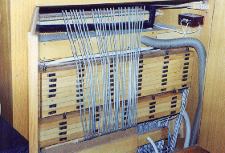
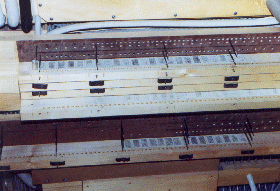
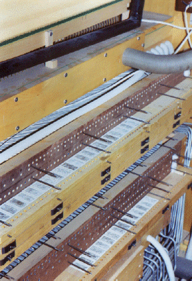
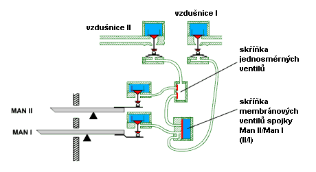
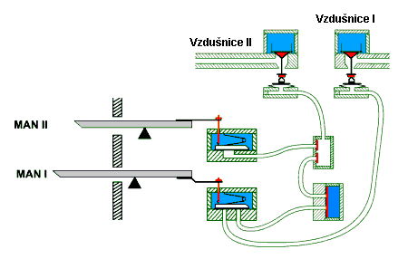
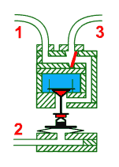
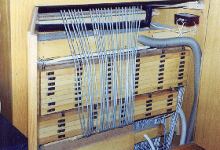
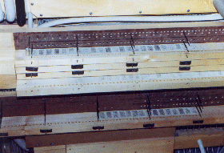
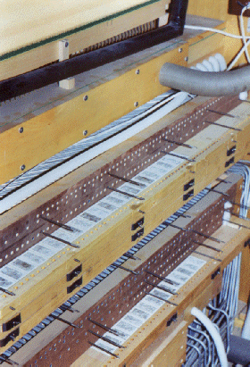

 


Spojky jsou zaøízení, které nalezneme prakticky ve všech varhanách s pneumatickou trakturou ve vìtším poètu jako spojky mezi klaviaturami (II/I, I/P atd.), uvnitø klaviatur (napø. I/I 4’) nebo jako transmise èi extenze. Na rozdíl od mechanické traktury u pneumatiky se nevyskytuje problém ztí�ení hry pøi zapnutí více spojek (spojky fungují na pneumatickém principu a jsou vybudovány a� dále v traktuøe, tak�e nemají vliv na ovládací sílu na klávese), co� vede varhanáøe èasto k budování velkého poètu spojek i za cenu znaèné slo�itosti zaøízení hracího stolu a tím i ni�ší spolehlivosti a èastìjší poruchovosti (stovky ko�enıch ventilkù a klapek s velkımi po�adavky na pøesnost vıroby a vıbìr materiálu).
|

Souèástí, odpovídající za chod spojky je membránovı
ventil. Zobrazen je zde jen jeden tento ventil, je však nutno mít na pamìti,
�e se jedná o zjednodušenı øez hracím stolem pro jeden tón, ka�dı další
tón bude mít všechny komponenty jen pro sebe (ve skuteènosti + zaøízení
pro kombinace, kolektivy atd., tak�e skuteènı øez trakturou pro jeden
tón bude o nìkolik øádù slo�itìjší). Všechny tóny mají membránovı ventil
ve spoleèném kanále – skøíòce membránovıch ventilù, která probíhá po celé
délce hracího stolu. Kanál uvnitø této skøíòky mù�e bıt pomocí dalšího
ventilu naplnìn stlaèenım vzduchem, èím� lze spojku zapínat nebo vypínat. Práci souboru traktury s vypnutou spojkou ukazuje následující animace. Kanálek ve skøíòce membránovıch ventilù spojky je naplnìn stlaèenım vzduchem, tak�e spojka manuálù II/I je vypnuta: |
Druhı manuál II ovládá pouze svou vzdušnici II pøes
komùrku se zpìtnımi ventily. První manuál (I) ovládá souèasnì tok vzduchu
v rourkách do dvou zaøízení – do své vzdušnice I a do membránového ventilu
spojky. Smìrem ke vzdušnici I vzduch proudí bez pøeká�ek, tak�e píš�aly
zapnutıch rejstøíkù mohou normálnì znít. Jinak vypadá tok vzduchu dalším
fragmentem traktury, souvisejícím s mechanismem spojky. Membrána ventilu
je tlakem vzduchu v komùrce nad ní pøitisknuta k vıstupnímu i vtokovému
otvoru do ní pøivedenıch rourek, tak�e je ucpává a nedovolí vzduchu od
ventilu nad klávesou projít k rource do sbìrné komùrky druhého manuálu.
Manuál I tak ovládá jen vzdušnici I, Manuál II vzdušnici II, klaviatury
nejsou spojeny. Na následující animaci je (samozøejmì zpomalenì) ukázáno, jak tentı� soubor pracuje v okam�iku zapnutí spojky: |
Zapnutí spojky v této konstrukci spoèívá ve vypuštìní stlaèeného vzduchu
z kanálu nad membránami (dvojèinnım ventilem, kterı je mimo vyobrazení…).
Sní�í-li se tlak v kanále na úroveò tlaku atmosférického, zanikne síla,
která tiskla membrány na otvory rourek. Tím je umo�nìno volné proudìní
vzduchu pod membránou z rourky do rourky. Funkci spojek v dvoumanuálovém nástroji s pedálem ukazuje následující interaktivní animace (po kliknutí na obrázek se otevøe v novém oknì). Mù�ete si vyzkoušet zapnout jednotlivé spojky (tlaèítky) a vyzkoušet jejich vliv na hru (myší mù�ete stisknout klávesu èi pedál): |
Jinou konstrukci, pracující na stejném principu ale
s jinımi komponenty (pou�ité ventily v hracím stole) ukazuje následující
obrázek: |

Jsou zde pou�ity klapkové ventily (v pøedchozích
pøíkladech byly na jejich místì ku�elky) a èásteènì jiné je i vedení rourek
a místa jejich spojení. Pod klapkou ventilu, øízeného prvním manuálem
Man I se nachází vtokové otvory dvou rourek, kterımi se po stisknutí klávesy
vzduch dostane jednak pøímo k relé pod první vzdušnicí (levı otvor, nejspodnìjší
rourka), jednak do skøíòky s membránovımi ventily spojky. Jsou to tedy
od poèátku dvì rourky a ne jedna, která se v pøedchozích pøíkladech dìlila
teprve v bloèku membrány. Ve slo�itìjších nástrojích s více spojkami,
pedálovım automatem, crescendem, kombinacemi… mù�e bıt rourek pod klapkou
i více. Tento pøíklad názornì ukazuje, �e v jednom nástroji mù�e bıt vyu�ito
celé øady konstrukcí a provedení ventilù – máme zde klapky, membrány,
zpìtné ventily, ku�elky v rùznıch funkcích. |
Na následujícím pøíkladu je popsána funkce spojky
v tlakovém (naplòovaném) systému. Spojkovı element je zde tvoøen na základì
modifikovaného relé se speciálnì upravenım vıtokovım kanálem: |
|  | K relé je mo�né pøivést
tlakovı vzduch dvìmi nezávislımi øídicími cestami – (1 a 2). Z nìj u�
vychází pouze jeden spoleènı kanál (3). Zøetelnì je vidìt, �e vıstupním
kanálem (3) mù�e proudit vzduch jak od vstupní rourky (1), tak i z pravého
kanálku v relé, kterı je zásobován vzduchem z komùrky s ventilem. Ventil
je ovládán míškem pøes rourku (2). Na zaèátku kanálu k rource (3) je malá
sbìrná komùrka, „sèítající“ pneumatické impulsy od obou zdrojù. V ní je
zabudován zpìtnı ventil, zabezpeèující tok vzduchu jen ve smìru od zdroje
ke spotøebièi, nedovolující únik vzduchu ke druhému zdroji (a tak vzájemné
ovlivnìní manuálù pøi vypnuté spojce). |
Funkci zaøízení pøibli�uje
tato aniamace – vzduch, kterı ke spojce dorazí rourkou (1) od ventilu
nad klávesou, bez pøeká�ek pokraèuje vıstupní rourkou 3 smìrem ke vzdušnici
(na cestì mù�e procházet dalšími zaøízeními a mezirelé, co� teï není podstatné).
Ka�dı stisk klávesy u rourky (1) tak je pøíèinou zapùsobení akèního èlenu
za rourkou (3). Jinak je tomu u druhé vstupní rourky (2). To, zda i objevení se tlaku v této rource zapùsobí na akèní èlen za rourkou (3) závisí na tom, je-li v komùrce relé v tuto chvíli pøítomen stlaèenı vzduch. První animace ukazuje pøípad, kdy tomu tak není. I kdy� se ku�elka relé nadzvedne nadmutım míškem, kterı se naplní rourkou (2), na vıstup (3) to nemá vliv, proto�e kanál v relé je prázdnı a impuls od rourky (2) se dále nepøenese. |
Na této animaci u� je relé s naplnìnou komùrkou (kanálkem). To odpovídá zapnuté spojce (komùrka se naplní otevøením dalšího ventilu v hracím stole, kterı zde není znázornìn). Tlakovı impuls se objeví na rource (3) jak v pøípadì pøíchodu rourkou (1), tak i (2). V tomto okam�iku je jeden spotøebiè (akèní èlen) na konci rourky (3) ovládán od dvou zdrojù – (1 i 2). Všimnìte si na této animaci blí�e i funkce zpìtného ventilu v komùrce nad relé. |
Jak lze tohoto upraveného relé vyu�ít v konstrukci
pneumatické spojky? Rourky, pøivádìjící ke spojce vzduch vedou od kláves
jednotlivıch manuálù (v tomto pøípadì od kláves jednoho tónu ve dvou manuálech,
pamatujme, �e pro ka�dı tón potøebujeme samostatné relé, spoleènı bude
jen vzduchovı kanál pro zapnutí spojky). Na animaci je ukázáno vyu�ití
spojkového relé v konstrukci traktury dvoumanuálového nástroje (opìt zjednodušenì,
je zakreslena jen spojka, chybí další pomocná zaøízení – kombinace, kolektivy,
crescendo, další spojky…). Nejprve tedy situace s vypnutou spojkou: |
Jak je vidìt, vzdušnice II je pøipojena pøes vıše
popsané spojkové relé. K nìmu jsou pøivedeny dvì rourky od ventilù nad
klávesami jednotlivıch manuálù. Navíc je zde ještì jedna rourka (nejspodnìjší
na animaci), kterou mù�e vzduch od spodního manuálu volnì pokraèovat ke
vzdušnici I. Tato rourka nemá �ádnı vliv na vlastnosti a funkci spojky
a mù�e se od pøívodu od klávesy oddìlit i v jiném místì (jiné øešení bylo
popsáno u� vıše, ventily u kláves mohou bıt klapkové a tato rourka mù�e
vybíhat samostatnì u� pøímo zpod ventilu). Komùrka ve spojkovém relé je prázdná, co� odpovídá vypnuté spojce. Stisk klávesy kteréhokoliv manuálu zpùsobí dopravení vzduchu rourkami a� k odpovídající vzdušnici. První manuál tak øídí vzdušnici I, druhı II. Vzduch od prvního manuálu sice zpùsobí nadmutí míšku a nadzdvi�ení ku�elky ve spojce, dále se však nic nestane, nebo� ku�elka se pohybuje v prázdné komoøe. Ta se naplní teprve po zapnutí spojky II/I: |
V tuto chvíli stisk klávesy ve druhém manuálu II funguje stejnì, jako
v pøedchozím pøípadì tj. uvádí do chodu relé ve vzdušnici II. Stisk
klávesy v prvním manuálu Man I však nejen sepne relé v první vzdušnici
I, ale rovnì� pøes spojkové relé i relé ve vzdušnici II. K hlasùm v
prvním manuále tak zazní i hlasy manuálu druhého. Spojka II/I je opìt
pøísnì jednosmìrná, stisk klávesy ve druhém manuálu II nemá díky konstrukci
spojkového relé a zpìtnım ventilùm na vzdušnici prvního manuálu vliv
ani pøi sepnuté spojce. Na následujících obrázcích je pohled na skuteènou spojku v hracím stole. (varhany Rieger Kloss, op. 3473 ve Smuteèní síni Nového høbitova v Tøebíèi, foto Michael Kroèil). |
   |
Øez spojkou s naznaèenımi nejèastìjšími místy závad.
| Podívejte se rovnì� na obdobnou kapitolu o spojkách v mechanické traktuøe. |
Na souvisejících stránkách jsou popsány nejèastìji
pou�ívané komponenty pneumatické
traktury, tónová traktura,
rejstøíková traktura
a pneumatická pomocná zaøízení v kapitolách o crescendu
a kolektivech a volnıch kombinacích. |
Poznámka: Tato stránka je souèástí Anatomie varhan ®, © Ing. Petr Bernat. Všechny animace © Konrad Zacharski